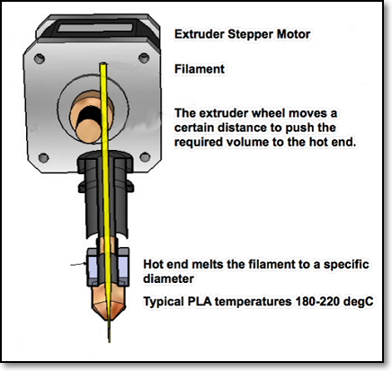
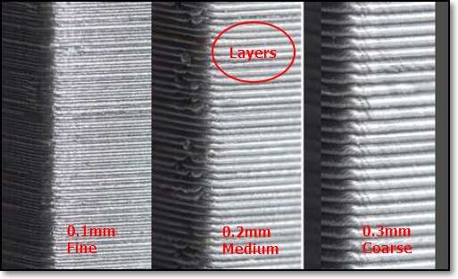
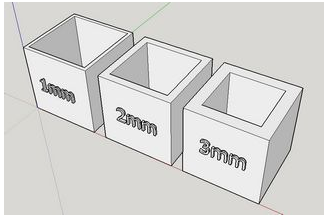
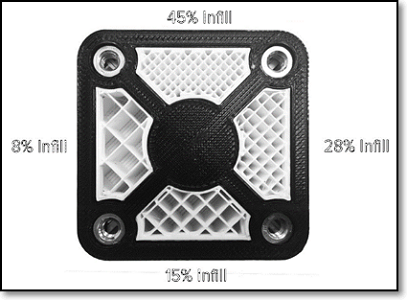
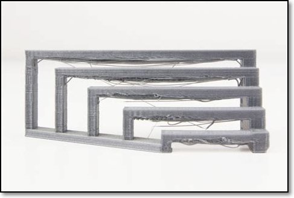
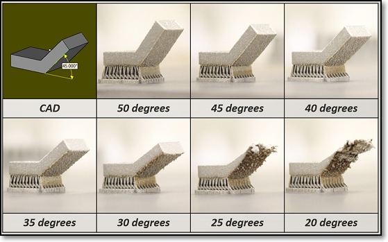
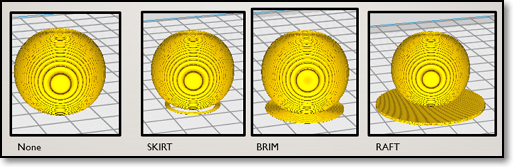
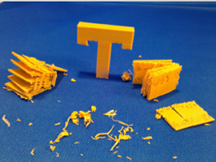
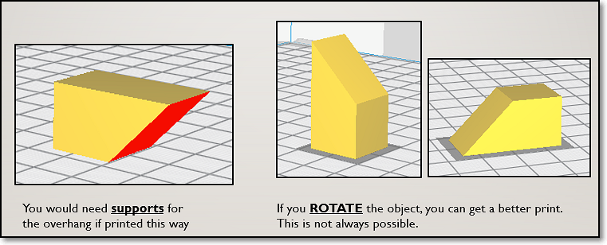

<!-- Home, Back using Javascript -->
<div>
<form>
<input type="button" value="Home" onclick="window.location.href='/ep1000digfab/index.html'">
<input type="button" value="Back" onclick="history.back()">
</form>
</div>
<div style="height:2em"></div>
<!-- Remember to change the title of the page -->
# 3D Printing
3D printing is touted as the new revolution in manufacturing and will soon surpass all methods of product development. Unfortunately, this is not true. It is revolutionary, in the fact that it allows manufacturing to be placed in the hands of the common people, however, it will not surpass the manufacturing techniques in place.
## Characteristics
3D printing has the following advantages:
- it puts manufacturing in the hands of the public
- you are able to create almost anything with 3D printing
- it is ideal for rapid prototyping
For all its advantages, you must be aware of its disadvantages
- the process is very slow compared to manufacturing (at least 100 times slower)
- prototypes do not have the strength of actual products
The foremost advantage of 3D printing is the creation of prototypes. In any design process, the most critical is to produce an actual prototype in which you could test the product (although not for strength). Using digital fabrication and 3D printing we are able to create a prototype within hours which can show the direction in which we should take towards manufacturing. (Usually a prototype created using conventional methods would take days or weeks)
References:
1. [DFab Notes on 3D Printing](https://skeatz.github.io/DigitalFab-PrototypingFundamentals/files/05-3dprint.html) on Mr. Steven Chew's site.
<div class="blankline_2"></div>
<div style="height:2em"></div>
## A Brief Look at 3D Printing
### What can be 3D Printed
- Almost anything or an object that you can imaging:
- If you can draw it or model it, you can most surely 3D print it (so that's why we learn Fusion 360!).
- Also, items that are not normally created using using [subtractive manufacturing](https://en.wikipedia.org/wiki/Machining), can be 3D printed (more about this later)

<div class="blankline_2"></div>
## 3D Printers at Fablab@SP
- The Fablab@SP currently has the following 3D printers which are available for use by qualified students, staff and members. Here is a simple comparison of their sizes and qualities:
|Printer| Ultimaker 2+ | Cubicon Style 3DP-2105 |MBot 3D Grid 4 |
|:------|:-------------|:-----------------------|:--------------------------|
| |  | | |
|Object Size |210x210x205 mm |150x150x150 mm |235x210x190 mm|
|Filament Diameter| 2.85mm | 1.75mm | 1.75mm |
|Type |Open filament | Open Filament | Open Filament |
- Although the 3D printers can handle a variety of filaments (PLA, ABS etc) the Fablab@SP uses only PLA based filament for easy printing and access. Please remember this in your preparation for 3D printing.
- All three printers can use a common slicer for the preparation of 3D printing jobs - [Ultimaker Cura](https://ultimaker.com/software/ultimaker-cura)
- A common question asked by all, is which printer should I purchase, if I would want one, here are my personal choices:
- [Prusa Mk3](https://www.prusa3d.com/original-prusa-i3-mk3/) (if you had the money)
- [Creality 3D Ender 3 Pro](https://creality3d.shop/collections/ender-series-3d-printer/products/creality3d-ender-3-pro-high-precision-3d-printer) (if you don't)
<div style="height:2em"></div>
## The 3D Printing Process

- The 3D printing process can be broken down as follows:
- Creating a usable 3D design- Converting the design into a 3D representable file (.STL)
- Slicing the 3D representable file into layers
- Converting the layers into instructions for the 3D printer (gcode)
- The 3D printer creates the 3D object.
- There are many types of 3D printers, the list below shows the more common types that you will encounter:
- FFF (Fused Filament Fabrication) where a filament is heated/fused and deposited a layer at a time.
- [SLA (Stereolithography)](https://en.wikipedia.org/wiki/Stereolithography) uses a photochemical process which places a chemical/resin and uses a light source to harden each layer.
- [SLS (Selective Layer Sintering)](https://en.wikipedia.org/wiki/Selective_laser_sintering) is a technique that uses a laser as a power source to sinter/fuse powdered material at points to create a solid structure.
- As we are mainly using FFF, you will encounter two types of FFF printers
- Cartesian (using X-Y-Z), and
- Delta (using polar-Z)
- In both cases, the printer head is in the Z-axis

<div class="blankline_2"></div>
## 3D Printer components
The following diagram shows the different parts of a FFF 3D Printer. The printers may come in different shapes and sizes, however, the parts and principles remain the same.
<!--
|3D Printer Parts |
|:-------------------------:|
| [](images/0905_3dprinterparts.jpg) |
-->
<div>
<section class="info"><a href="images/0905_3dprinterparts.jpg">
<figure class="infoimg">
<img class="w640" src="images/0905_3dprinterparts.jpg" alt="3D Printer Parts" />
<figcaption>3D Printer Parts</figcaption>
</figure></a>
<div class="infotext" markdown="1"></div>
<div class="infoclr"></div>
</section> <!--End of Section.info-->
</div>
The important parts for you to note are:
- the **Hot End** of the extruder. Temperatures at the hot-end can reach in excess of 180 degC, you could easily burn your fingers
- the **print bed** of our printers are heated to 60 degC in order for the fused filament to adhere. You have to be extra careful with the bed, not because it can burn your fingers. If there is slight mis-alignment of the print bed, the print job will fail. It is essential that the print bed is as level as possible.
- the **filament** is kept in a spool at the side/back of the printer, ensure that the feed is constant and free of obstruction.
<div class="blankline_2"></div>
## The 3D Printing Process
The 3D Printing Process is a **Digital Fabrication** process. We start with a digital design and convert it to a format which the 3D printer can implement.
The digital process begins with a design of a 3D model, which can be obtained by
- Designing with CAD software (e.g. Fusion 360, SketchUp, Rhino)
- Curated from archives (e.g. [Thingiverse](https://www.thingiverse.com/), [My Minifactory](https://www.thingiverse.com/) or other libraries)
In using CAD, we develop a 3D model in the application of choice, we need to find a common technique of representing this model. The two common methods are
- STL (Standard Tesselaltion Language)
- OBJ
- Other methods (Ref: All3DP: [3D File Formats](https://all3dp.com/3d-file-format-3d-files-3d-printer-3d-cad-vrml-stl-obj/))
Since we are using Fusion 360, how do we convert our 3D model into a STL file ?
|<img scr="images/blank.png" width="50%">| Method |
|:-------------------------|:---------|
| | Direct saving as STL<br>* Object Browser > Select Object > R-click > Save as STL<br>* Select Folder and Name |
| | Tools > Make > 3D Print |
| | 3D Print Menu<br>* Select Object<br>* Preview Mesh : Yes<br>* Refinement : Medium<br>* Output > Send to 3d Print Utility : No<br><br>Output will be saved as an STL file.|
We are now ready to slice our STL file.
- Slicing cuts the object into layers
- Each layer is a printable level in the X-Y coordinates
- The 3D Printer head moves up one layer at-a-time in the Z-axis
The software we will use is [Ultimaker Cura](https://ultimaker.com/software/ultimaker-cura) which can be applied to all 3 printers in the Fablab. There are other slicer software available as well, sometimes proprietory to a particular brand of printer
- Simplify 3D- Makerbot Print- MBot 3D
- [Others - All3DP](https://all3dp.com/1/best-3d-slicer-software-3d-printer/)
The main job of the slicer software is to* convert the STL file into layers,* determine the print characteristic of each layer* convert the print characteristics of the layer into a language understandable by the 3D Printer (usually gcode)
The slicer software will usually have the configuration code for a particular set of 3D Printer(s). The machine-readable code is saved/transferred to the 3D Printer using a SDCard/Thumbdrive or by network to perform the actual printing process.
<div class="blankline_2"></div>
## 3D Printer Components
Before we can start using the slicer software, we need to understand some of the characteristics of our 3D printer. These characteristics help in the tuning of the software parameters, allowing us to have* finer prints* faster prints* stronger prints
Here are some of the common characteristics that you can tweak
- Layer height (extruded filament thickness)
- Wall thickness- Infill percentages
- Bridging and overhangs
- Supports
- Bed adhesion
- Object orientation
<div class="blankline_2"></div>
### Extruder Module
<!--
<div>
<section class="info"><a href="images/0907_extruder.png">
<figure class="infoimg">

<figcaption>Extruder module</figcaption>
</figure></a>
<div class="infotext" markdown="1">
</div>
<div class="infoclr"></div>
</section>
</div>
-->
Extruder Module
- The extruder is a heated tube with a nozzle.
- A stepper motor feeds the filament into the nozzle. This allows control of the amount of filament to be extruded (fed in) or retracted.
- The extruder heats up the filament and melts it before forcing it out of the nozzle.
- Nozzle sizes range from 0.1 to 0.8 mm. The standard nozzle is **0.4mm**.
- The flow rate of the filament is controlled by the stepper motor. You can adjust this to 20% ~150% of the normal flow rate through software.
- Some 3D printers can have more than one nozzle, allowing for different colors or material.
<div class="blankline_2"></div>
### Layer Height

<!--
<div>
<section class="info"><a href="images/0908_layerHeight.png">
<figure class="infoimg">
<figcaption>Layer Height</figcaption>
</figure></a>
<div class="infotext" markdown="1">
Layer height
- The height of each printed layer of the 3D print
- Thinner layers give finer prints
- 3D prints with thinner layers take longer to print
- Ranges from 0.1~0.4mm for a 0.4 nozzle (typical 0.2mm)
- Affects resolution, speed and smoothness of print
</div>
<div class="infoclr"></div>
</section>
</div>
-->
Layer height
- The height of each printed layer of the 3D print
- Thinner layers give finer prints
- 3D prints with thinner layers take longer to print
- Ranges from 0.1~0.4mm for a 0.4 nozzle (typical 0.2mm)
- Affects resolution, speed and smoothness of print
<div class="blankline_2"></div>
### Wall Thickness
<!--
|**Wall Thickness**||
|:-------------------------|--------------------------:|
| <ul><li>Controls the number of strands required for the thickness of the wall</li><li>if the Layer Height=0.2mm, then a wall thickness of 1mm will require 5 strands laid side-by-side</li><li>affects print time and strength of print</li> <li>Typical wall thickness is min 0.8mm</li></ul>||
-->
<!--
<section class="info"><a href="images/0909_wallThickness.png">
<figure class="infoimg">

<figcaption>Wall Thickness</figcaption>
</figure></a>
<div class="infotext" markdown="1">
**Wall Thickness**
* Controls the number of strands required for the thickness of the wall
* if the Layer Height=0.2mm, then a wall thickness of 1mm will require 5 strands laid side-by-side
* Affects print time and strength of print
* Typical wall thickness is min 0.8mm
</div>
<div class="infoclr"></div>
</section>
-->
Wall Thickness
- Controls the number of strands required for the thickness of the wall
- if the Layer Height=0.2mm, then a wall thickness of 1mm will require 5 strands laid side-by-side
- Affects print time and strength of print
- Typical wall thickness is min 0.8mm
<div class="blankline_2"></div>
### Infill Percentage
<!--
<section class="info"><a href="images/0910_infill.png">
<figure class="infoimg">

<figcaption>Infill Percentage</figcaption>
</figure></a>
<div class="infotext" markdown="1">
**Infill Percentage**
* Controls the amount of fill in the internal cavities.
* Higher infills give more strength.
* Higher infills take longer time to print.
* You can select different infill patterns.
* Typical infills 10~18%.
</div>
<div class="infoclr"></div>
</section>
-->
Infill Percentage
- Controls the amount of fill in the internal cavities.
- Higher infills give more strength.
- Higher infills take longer time to print.
- You can select different infill patterns.
- Typical infills 10~18%.
<div class="blankline_2"></div>
### Bridging
<!--
<section class="info"><a href="images/0911_bridging.jpg">
<figure class="infoimg">

<figcaption>Bridging</figcaption>
</figure></a>
<div class="infotext" markdown="1">
**Bridging**
* Refers to the prints between 2 points that have no connection to each other.
* Normally, a 3D printer first prints the base layer, on which it builds up layer by layer. In contrast, there is no base layer between two points when bridging.
* Consequently, printing must be done in the air so that the gap can be bridged.
* There is a limit before the print fails and sagging strands appear
* You need to test for the maximum distance for each printer
* Affects the quality of the print.
</div>
<div class="infoclr"></div>
</section> -->
Bridging
- Refers to the prints between 2 points that have no connection to each other.
- Normally, a 3D printer first prints the base layer, on which it builds up layer by layer. In contrast, there is no base layer between two points when bridging.
- Consequently, printing must be done in the air so that the gap can be bridged.
- There is a limit before the print fails and sagging strands appear
- You need to test for the maximum distance for each printer
- Affects the quality of the print.
<div class="blankline_2"></div>
### Overhang
<!--
<section class="info"><a href="images/0912_overhang.png">
<figure class="infoimg">

<figcaption>Overhang Limits</figcaption>
</figure></a>
<div class="infotext" markdown="1">
**Overhang Limits**
* 3D printers cannot print in "air"
* There is a limit where there is insufficient support to handle the print
* Most printers can handle an overhang of 45 deg
* Perform a test print to determine your printer's limits (You can find examples in Thingiverse!)
</div>
<div class="infoclr"></div>
</section>
-->
Overhang Limits
- 3D printers cannot print in "air"
- There is a limit where there is insufficient support to handle the print
- Most printers can handle an overhang of 45 deg
- Perform a test print to determine your printer's limits (You can find examples in Thingiverse!)
<div class="blankline_2"></div>
### Platform Adhesion
<!--
<section class="info"><a href="images/0913_platformAdhesion.png">
<figure class="infoimg">

<figcaption>Platform Adhesion</figcaption>
</figure></a>
<div class="infotext" markdown="1">
**Platform Adhesion**
* The print bed is usually heated to improve adhesion
* Sometimes, the print object requires help in adhering to the print bed
* Skirts are used to provide an outline - no adhesion
* Brims allow some adhesion to the print perimeter
* Rafts are full platforms on which the 3D print is placed. Print adhesion is onto the raft instead of the bed.
</div>
<div class="infoclr"></div>
</section>
-->
Platform Adhesion
- The print bed is usually heated to improve adhesion
- Sometimes, the print object requires help in adhering to the print bed
- Skirts are used to provide an outline - no adhesion
- Brims allow some adhesion to the print perimeter
- Rafts are full platforms on which the 3D print is placed. Print adhesion is onto the raft instead of the bed.
<div class="blankline_2"></div>
### Supports
<!--
<section class="info"><a href="images/0914a_supportsOn.png">
<figure class="infoimg">
<img class="w320" src="images/0914a_supportsOn.png" alt="Supports in place" />
<figcaption>Supports in place</figcaption>
</figure></a>
<a href="images/0914b_supportsOff.png">
<figure class="infoimg">

<figcaption>Supports removed</figcaption>
</figure></a>
<div class="infotext" markdown="1">
**Supports**
* Supports are used to aid in printing overhangs
* Supports make impossible prints possible
* Supports are removed after the print is complete
* Supports add to the print time as well as the touch-up and finishing time to the model
* Orientation of the model helps in the determining of supports
</div>
<div class="infoclr"></div>
</section>
-->
<img class="w320" src="images/0914a_supportsOn.png" alt="Supports in place" />
Supports
- Supports are used to aid in printing overhangs
- Supports make impossible prints possible
- Supports are removed after the print is complete
- Supports add to the print time as well as the touch-up and finishing time to the model
* Orientation of the model helps in the determining of supports
<div class="blankline_2"></div>
### Object Placement
<!--
<section class="info"><a href="images/0915_orientation.png">
<figure class="infoimg">

<figcaption>Object Placement & Orientation</figcaption>
</figure></a>
<div class="infotext" markdown="1">
**Object Placement & Orientation**
* The placement of the object plays an important role in the success of the print
* Changing the orientation can improve the adhesion and limit the use of supports
* Use the **Rotate** feature to change the orientation
* Use the **Place on bed** feature to ensure proper placement on the print bed
</div>
<div class="infoclr"></div>
</section> -->
Object Placement & Orientation
- The placement of the object plays an important role in the success of the print
- Changing the orientation can improve the adhesion and limit the use of supports
- Use the **Rotate** feature to change the orientation
- Use the **Place on bed** feature to ensure proper placement on the print bed
<div class="blankline_2"></div>
### Assignment: 3D Printing
In this assignment, you will experiment with the various settings of a slicer software (Ultimaker Cura) on a 3D object and simulate the 3D print process. You will also attempt to create a 3D print of the knight piece that you have to create.
Here is the link to [Assignment: 3D Printing](as_3D_printing.md)
<!-- Home, Back using Javascript -->
<div style="height:2em"></div>
<div>
<form>
<input type="button" value="Home" onclick="window.location.href='/ep1000digfab/index.html'">
<input type="button" value="Back" onclick="history.back()">
</form>
</div>
<!--End of markdown area-->